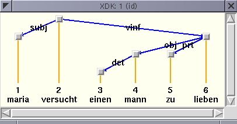
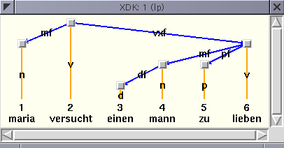

This section explains the Dag output functor. The Dag output functor assumes that the graph principle is used on the output dimension.
output.dag
Below, we display an example Dag output:

The blue edges correspond to edges in the dag, and the orange edges called projection edges connect each node in the dag with the corresponding index and word.
Below, we display an example Dag output including node labels. Node labels appear on the projection edges:

If you click on one of the gray nodes with the left mouse button, the XDK prints the abbreviated OL representation of the node on the output dimension. The middle mouse button prints the abbreviated OL representation of the node on all dimensions. The right mouse button prints the abbreviated OL representation of all nodes in the analysis, and on all dimensions.